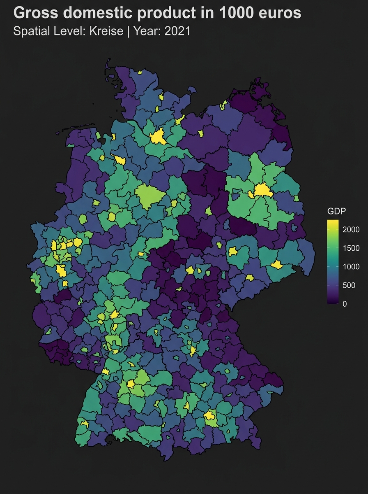

Overview
The inkaR package provides a modern R interface to the
BBSR INKAR database —
Indikatoren und Karten zur Raum- und Stadtentwicklung
(Indicators and Maps for Spatial and Urban Development). INKAR is
published by the German Federal Institute for Research on Building,
Urban Affairs and Spatial Development (BBSR) and contains hundreds of
regional indicators at multiple spatial levels across Germany.
Key features:
-
Browse & Search: Find indicators offline with
view_indicators()andsearch_indicators(). -
Interactive Wizard: Step-by-step guided download
with
select_indicator(),select_level(), andselect_years(). -
Bilingual Output: All results available in German
(default) or English (
lang = "en"). - Disk Caching: API responses are cached locally — repeated calls return instantly.
-
Mapping: Visualize downloaded data on German
administrative maps with
plot_inkar().
1. Browsing Indicators
The INKAR database contains hundreds of indicators.
inkaR ships a local metadata table
(indicators) so you can explore and filter without hitting
the API.
View the full list
Opens a searchable, sortable table in the RStudio viewer:
view_indicators() # German names (default)
view_indicators("en") # English namesSearch by keyword
search_indicators("GDP", lang = "en")
search_indicators("Arbeitslosigkeit") # German searchEach result shows the ID (short code) and
M_ID (numeric API key) you need to download data.
2. Interactive Wizard
For guided, step-by-step downloads — especially useful in the RStudio console:
# Step 1 – pick an indicator (searchable menu)
id <- select_indicator(lang = "en")
# Step 2 – pick the spatial level (e.g. KRE, GEM, BLD)
level <- select_level(id)
# Step 3 – pick the year(s)
years <- select_years(id, level)
# Step 4 – download
df <- get_inkar_data(id, level = level, year = years, lang = "en")Each step can also be called independently when you already know some parameters:
select_indicator("employment") # pre-filters by keyword before showing the menu3. Downloading Data
get_inkar_data() is the main download function.
Basic download
# GDP (ID "011") for Districts (Kreise) — latest available year
df <- get_inkar_data("011", level = "KRE")
head(df)
#> Kennziffer Raumeinheit Aggregat Zeit Indikator Wert
#> 1 01001 Flensburg (KSt) KRE 2022 Bruttoinlandsprodukt_... 1234.5Specify year(s)
# Single year
df_2021 <- get_inkar_data("011", level = "KRE", year = 2021)
# Range of years
df_range <- get_inkar_data("011", level = "KRE", year = 2015:2021)English output
df_en <- get_inkar_data("011", level = "KRE", year = 2021, lang = "en")
head(df_en)
#> region_id region_name level_name year indicator_name value
#> 1 01001 Flensburg (KSt) KRE 2021 Gross domestic pro... 1234.5Column names in English mode:
| Column | Description |
|---|---|
region_id |
Administrative key (Kennziffer) |
region_name |
Region name |
level_name |
Spatial level (e.g. KRE) |
year |
Reference year |
indicator_name |
English indicator label |
value |
Numeric value |
Multiple indicators at once
Pass a vector of IDs to download and merge automatically:
df_multi <- get_inkar_data(c("011", "q_alo"), level = "KRE", year = 2021, lang = "en")Results are merged by region and year into a wide-format tibble.
Export to CSV
get_inkar_data("011", level = "KRE", csv = TRUE, export_dir = tempdir())
# Saves: inkar_011_KRE_Bruttoinlandsprodukt_<timestamp>.csv4. Spatial Levels
Common levels:
| Code | German name | English |
|---|---|---|
KRE |
Kreise / Kreisfreie Staedte | Districts |
GEM |
Gemeinden | Municipalities |
ROR |
Raumordnungsregionen | Spatial Planning Regions |
BLD |
Bundeslaender | Federal States |
BND |
Bund | Federal Territory (Germany) |
Not all indicators are available at every level. Use
select_level() to see which levels a given indicator
supports, or call get_geographies() to list all available
levels:
5. Mapping
plot_inkar() visualizes a downloaded data frame on
German administrative boundaries. It requires the ggplot2,
sf, and geodata packages.
Automatic Maps via GADM
By default, the function downloads boundaries from GADM and caches them. It supports: -
BND: Federal Territory (Germany as a whole - GADM Level 0)
- BLD: Federal States (GADM Level 1) - KRE:
Districts (GADM Level 2) - GEM: Municipalities (GADM Level
3)
# Download GDP for Districts
df <- get_inkar_data("011", level = "KRE", year = 2021, lang = "en")
# Plot — light theme (default)
plot_inkar(df)
# Dark theme
plot_inkar(df, mode = "dark")Below is an example of the dark mode map output generated by
plot_inkar():

Custom Geometries
If you want to use custom boundaries (e.g. ROR
Raumordnungsregionen, or custom shapefiles), you can pass an
sf object directly to the geom parameter.
plot_inkar() will skip the GADM download and merge your
data with the custom spatial data frame:
# Load your custom spatial data frame (e.g. from an sf shapefile)
# my_shapes <- sf::read_sf("path/to/shapes.shp")
# Plot using custom geometry
# plot_inkar(df, geom = my_shapes)6. Caching
inkaR caches API responses to your user data directory
(tools::R_user_dir("inkaR", "cache")). Caches expire after
24 hours. To clear them manually:
7. Analysis Helpers
Filter to specific regions or districts
You can filter downloaded datasets to specific regions using either the plural or singular helpers. For districts, you can also filter by their administrative key (Kennziffer/ID):
df <- get_inkar_data("011", level = "KRE", lang = "en")
# Filter regions (by name)
df_cities <- compare_regions(df, c("Berlin", "Hamburg", "München"))
df_city <- compare_region(df, "Berlin") # Singular alias
# Filter districts (by name or district ID/Kennziffer)
df_districts <- compare_districts(df, c("01001", "Hamburg"))
df_district <- compare_district(df, "02000") # Singular aliasPlot trends over time
inkar_trends(df, regions = c("Berlin", "Hamburg"))Theme-filtered search
get_themes() # list all themes
search_indicators("employment", theme = "Arbeitsmarkt")
view_indicators("en", theme = "Bevölkerung")Quick Reference
| Function | Purpose |
|---|---|
inkar() |
English shortcut — latest year, EN output |
get_inkar_data() |
Download indicator data from the API |
inkaR() |
Full-featured download with interactive wizard |
view_indicators() |
Browse all indicators in a viewer table |
search_indicators() |
Search indicators by keyword |
get_indicators() |
Return indicator metadata as a data frame |
get_themes() |
List indicator themes/domains |
select_indicator() |
Interactive menu to pick an indicator |
select_level() |
Interactive menu to pick a spatial level |
select_years() |
Interactive menu to pick year(s) |
get_geographies() |
List available spatial levels |
compare_regions() |
Filter downloaded data to named regions |
compare_region() |
Singular alias for compare_regions()
|
compare_districts() |
Filter data by district names or IDs |
compare_district() |
Singular alias for compare_districts()
|
inkar_trends() |
Line chart of indicator values over time |
plot_inkar() |
Plot downloaded data on a map |
clear_inkar_cache() |
Clear the local API response cache |